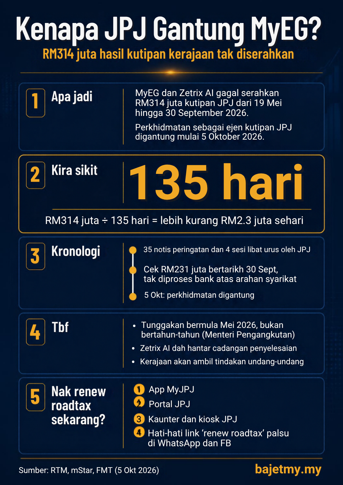

Ramai antara kita renew roadtax dan lesen memandu guna MyEG sebab senang: bayar online, siap. Tapi mulai 5 Oktober 2026, perkhidmatan MyEG dan Zetrix AI sebagai ejen kutipan Jabatan Pengangkutan Jalan (JPJ) digantung.
Sebabnya? Duit kutipan yang sepatutnya diserahkan kepada kerajaan tak sampai.

Apa yang berlaku
Menurut Menteri Pengangkutan Anthony Loke, MyEG Sdn Bhd dan Zetrix AI Bhd, kedua-duanya di bawah Kumpulan MYEG, gagal menyerahkan RM314 juta hasil kutipan kerajaan bagi tempoh 19 Mei hingga 30 September 2026.
Maksudnya, rakyat sudah membayar, ejen sudah mengutip, tapi duit itu tidak dipindahkan kepada kerajaan. Perkhidmatan mereka sebagai ejen kutipan JPJ akan kekal digantung sehingga keseluruhan tunggakan diserahkan.
Berapa besar RM314 juta?
Tempoh 19 Mei hingga 30 September ialah lebih kurang 135 hari.
- RM314 juta ÷ 135 hari = lebih kurang RM2.3 juta sehari yang tidak diserahkan kepada kerajaan.
Kronologi ringkas
| Tarikh | Apa yang berlaku |
|---|---|
| 19 Mei 2026 | Tunggakan bermula |
| Mei hingga September | JPJ keluarkan 35 notis peringatan dan adakan 4 sesi libat urus, termasuk dengan Kementerian Kewangan |
| 21 Ogos 2026 | Syarikat serahkan cek RM231 juta bertarikh 30 September |
| 30 September 2026 | Cek ditunaikan, tapi bank tidak memprosesnya atas arahan syarikat sendiri |
| 5 Oktober 2026 | Perkhidmatan MyEG dan Zetrix AI sebagai ejen kutipan JPJ digantung |
Tbf: cerita ini belum habis
- Bukan masalah bertahun-tahun. Ada dakwaan di media sosial bahawa tunggakan ini sudah lama. Loke menjelaskan tunggakan ini bermula Mei tahun ini.
- Ada cadangan penyelesaian. FMT melaporkan Zetrix AI sudah menghantar cadangan penyelesaian.
- Tindakan undang-undang. Kementerian Pengangkutan dan JPJ berkata akan mengambil tindakan undang-undang sewajarnya untuk mendapatkan semula tunggakan.
Jadi adil untuk kita tunggu penjelasan penuh daripada kedua-dua pihak sebelum membuat kesimpulan.
Cara renew roadtax atau lesen sekarang
Kerajaan berkata penggantungan ini tidak menjejaskan perkhidmatan JPJ kepada rakyat. Saluran yang boleh digunakan:
- Aplikasi MyJPJ
- Portal awam JPJ
- Kaunter dan kiosk JPJ
- Kaunter bergerak di Kompleks Sultan Abu Bakar (KSAB) dan Bangunan Sultan Iskandar (BSI), Johor, untuk bayaran saman
Hati-hati dengan link palsu
Bila ramai orang keliru tentang mana nak renew, scammer suka mengambil peluang. Elakkan klik link "renew roadtax" yang dihantar melalui WhatsApp, SMS atau iklan media sosial. Muat turun aplikasi MyJPJ terus dari App Store atau Google Play, dan taip sendiri alamat portal JPJ.
Ringkasan
MyEG dan Zetrix AI gagal menyerahkan RM314 juta hasil kutipan JPJ dalam tempoh lebih kurang 135 hari, atau kira-kira RM2.3 juta sehari. Perkhidmatan mereka digantung mulai 5 Oktober 2026 dan kerajaan akan mengambil tindakan undang-undang. Untuk renew roadtax atau lesen, gunakan aplikasi MyJPJ, portal JPJ atau kaunter JPJ.
Sumber
- RTM: MyEG dan Zetrix AI digantung susulan tunggakan RM314 juta, tiada motif politik (5 Oktober 2026)
- mStar: JPJ keluarkan 35 notis tunggakan RM314 juta sebelum gantung perkhidmatan MyEG, Zetrix AI (5 Oktober 2026)
- Newswav: MYEG gagal langsaikan tunggakan kutipan hasil RM314 juta sejak Mei, kata Loke (Oktober 2026)
- FMT: Zetrix AI hantar cadangan penyelesaian (5 Oktober 2026)